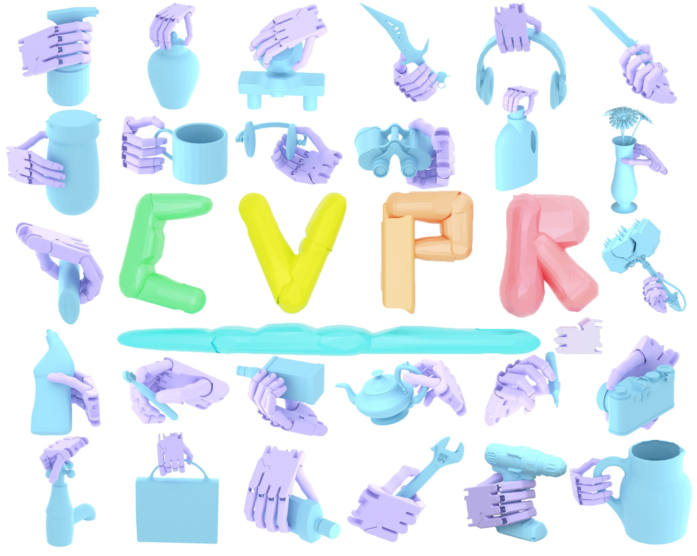
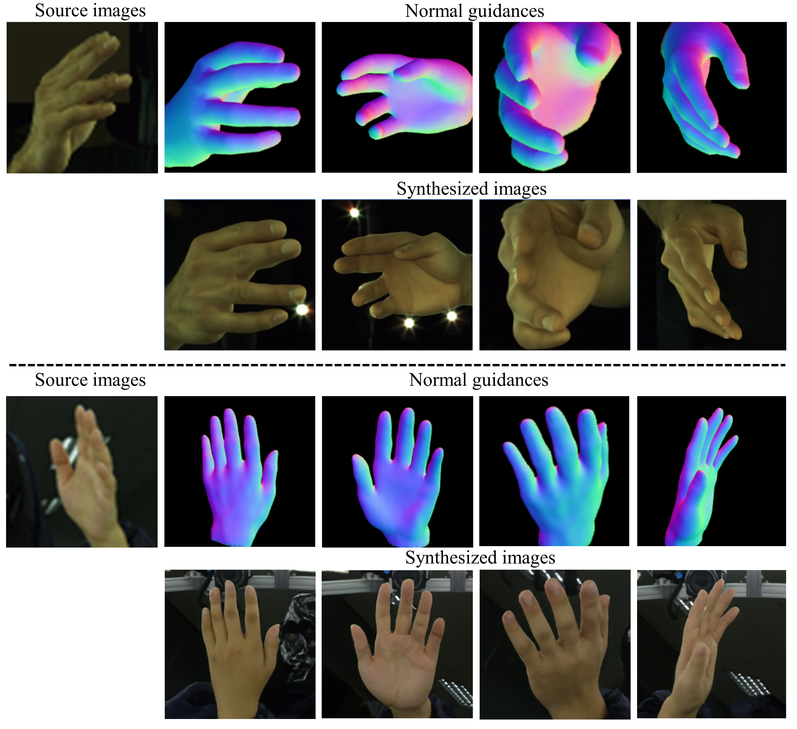
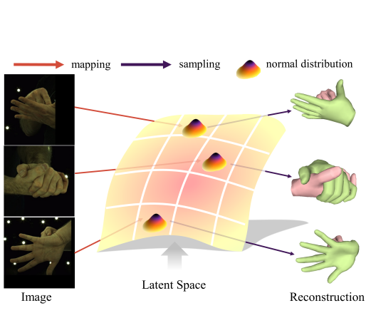

MaskDexGrasp
Part-aware dexterous grasp synthesis

GraspDiff
Multimodal-guided grasp generation

NP-Hand
Normal-guided novel-view hand synthesis

Interaction Prior
Monocular interacting-hands reconstruction

Part-aware dexterous grasp synthesis
Multimodal-guided grasp generation

Normal-guided novel-view hand synthesis

Monocular interacting-hands reconstruction